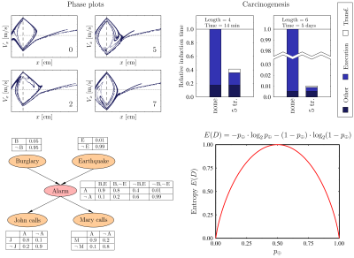

Suppose that we want to insert a graph of the sine function in a LaTeX document. That is, we would like to have the following result:
Because the support for creating graphs in LaTeX itself is limited, it is best to rely on an external graphing program. That is, you create the graph of the sine function with the graphing program and save the result to a file. Then you include that file as a figure into your LaTeX document. The best file formats for saving graphs are the vector graphics file formats EPS and PDF because these are well supported by LaTeX and because they can be scaled without loss of quality to any resolution. Any graphing program that supports these file formats can be used to create graphs that can be included in a LaTeX document. Examples of such programs are GNUPlot, Asymptote, GRI, R, Octave, and Excel. Further down this page, I will show how the free software graphing tool GLE can be used to this end.
For now, I assume that you already created your graph in EPS or PDF format and saved it to a file in the same directory as where your LaTeX file is (your .tex file). If you want to follow this example, you can download such a file for the sine function here: sin.eps, sin.pdf.
You can include a figure in EPS or PDF format into a LaTeX document by using the "graphics" package. The following is an example of a LaTeX file that includes the figure from the file "sin.eps" (or "sin.pdf"):
\documentclass{article}
\usepackage{graphics}
\begin{document}
\begin{figure}
\includegraphics{sin}
\caption{\label{sin}The sine function.}
\end{figure}
\end{document}
The most important parts here are the "\usepackage{graphics}", which should go at the top of your LaTeX document (in the so-called preamble) and the "\includegraphics{sin}", which imports the graph from the file "sin" into your LaTeX document. Note that the extension ".eps" or ".pdf" of the file name is not required. If you process your document with "latex" into DVI format, then it will use the ".eps" version; if you process your document with "pdflatex" to produce a PDF document, then it will use the ".pdf" version. Below I'll assume that you use "pdflatex".
Assume you have saved the above LaTeX document to a file called "graph.tex" (available here) and that you downloaded the files sin.eps and sin.pdf to the same directory. Now you can run "pdflatex graph.tex" to produce the final result: graph.pdf.
